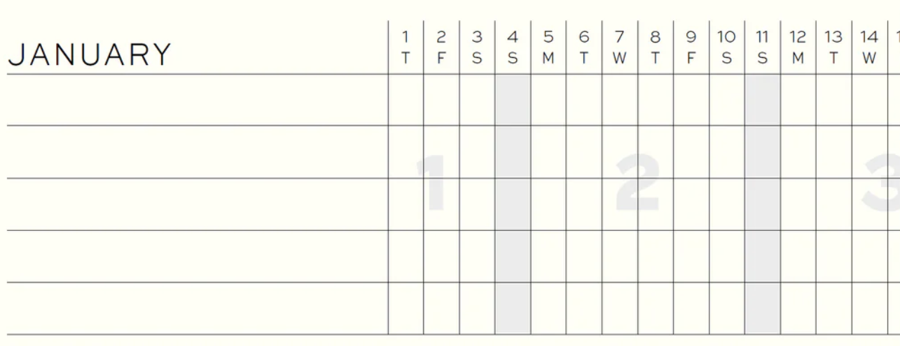

4 habits
The frontmatter of my planner has a section that looks like:

Spread across 2 pages, showing the entire year. I use these little boxes to track habits. I’ve been targeting these 4 for around 8 months:
- Write
- Sweat
- Meditation
- Pomodoro (at least 4)
This is in addition to my org-mode recurring tasks for mundane things, like scoop the litter, trim nails, or go on a bike ride. I do not compromise the pomodoro habit by using it to catch up on my org tasks (I did for a time, and found it compromised the integrity of the box)
I do not always complete all 4 habits of course. When I do, I give myself a little smiley face in the planner day - and then I can track my effort over time and that gives me an external reference for validation (something that can matter for keeping the inertia going). It’s almost September 2025, and with this neat overview I can see that I’ve been “on it”/trending the right direction since May of this year, and be satisfied with my effort.
Write#
Just write anything. It can be stream of consciousness in my journal, editing a blog post (hi) or writing a letter to friends/family. Writing = thinking, externalizing your thoughts forces you to confront your brain and realize the sentiment. Friend plug: if you’re a programmer and you want to get better at writing, check out this site.
Sweat#
Straightforward enough. Your body craves movement. It can also fight movement. Exercise is on a short list of things I’ve never regretted.
Meditate#
Meditation cultivates awareness. Acting in with intent makes it easy to live with yourself. Acting from a reactive place results in picking up needless burdens. Peeking at your senses in “low resolution” can remind you of the wealth of sensations that are available to you 24/7, and experience a “witnessing” of yourself.
4 Pomodoros#
The pomo habit is the most ambiguous of these. 2 hours of focus work may seem small but there is effort there for sure, and sometimes it’s all you need to get the ball rolling with some new obsessive project. I’ve got a sick setup with org-pomo that kills distracting sites and syncs up music when I’m in a pomodoro. I make sure to use the time with intent, and if I catch myself looking away, return without judgment.